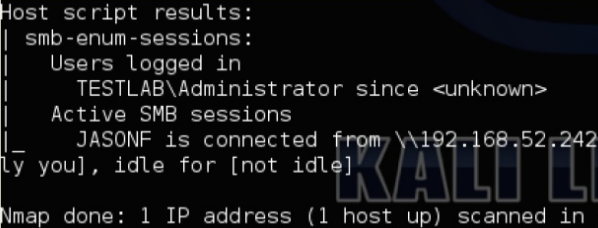

If you have a valid domain account, or local account valid for several machines, you can use smb-enum-sessions.nse
No admin privs needed
nmap -sU -sS --script smb-enum-sessinos.nse --script-args 'smbuser=jasonf,smbpass=BusinessBusinessBusiness!' -p U:137,t:139 192.168.52.0/24
